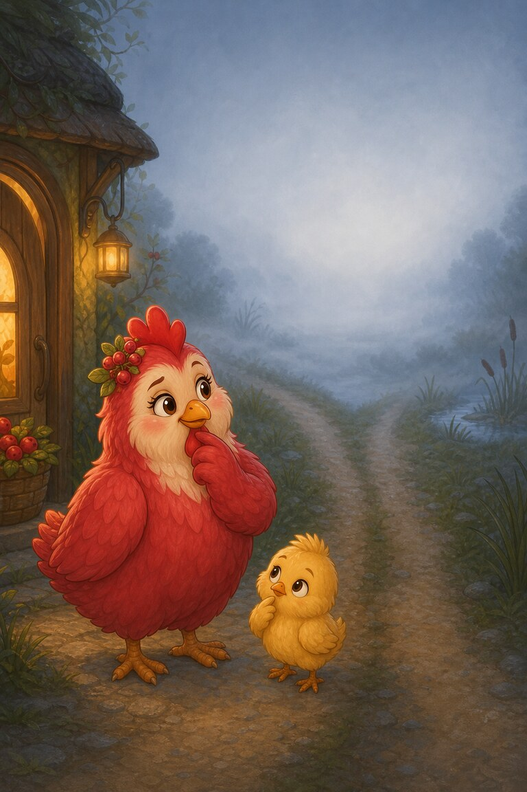
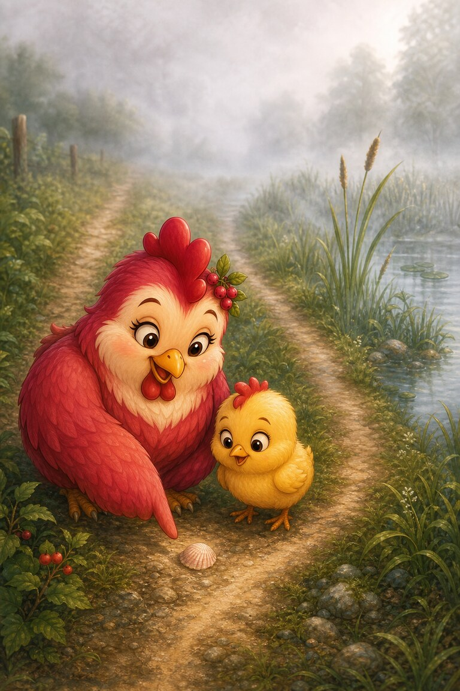
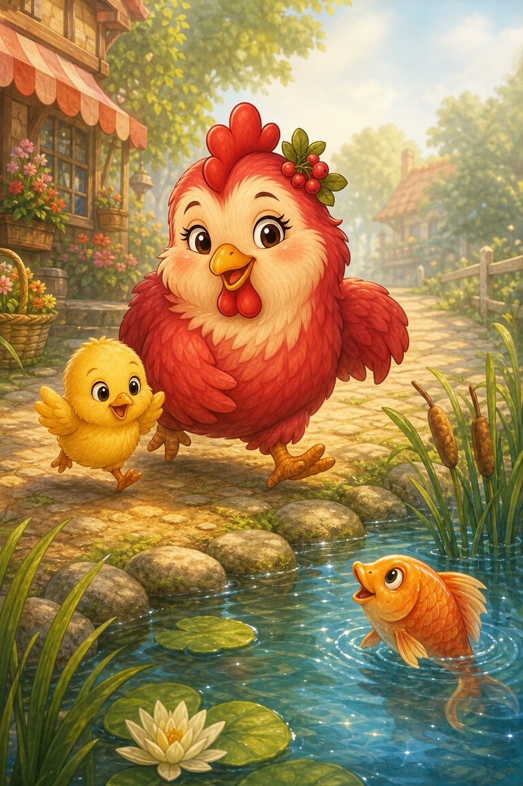
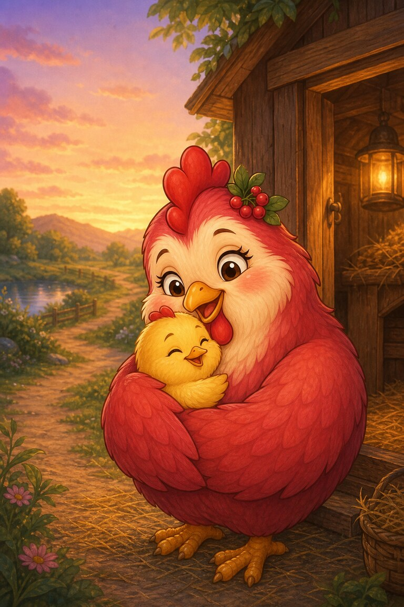

Page 1 of 5
Hen-Berry shuts the shop and checks each dish and whisk. One chick is still with her.
A five-page foggy-night adventure where two letters share one sound: sh, ch, th and wh.
Hen-Berry shuts the shop and checks each dish and whisk. One chick is still with her.

“Which path leads home?” asks the chick. The thick fog hides both tracks.

Hen-Berry spots a shell beside the thin track. “This is the path from the fish pond.”

They rush past the pond, chat with a fish, and reach the chick’s shed.

The chick thanks Hen-Berry with a quick hug. Two letters can share one sound, and two friends can share one path.
A shell. Hen-Berry recognises the shell as a clue from the fish-pond path.
SnackPack Sentences & Spelling has the full Reading Trail, longer stories, word packs and eight literacy games.
Next storyStripe‑Scout’s Blend Bridge
Know a family or class who would enjoy it?